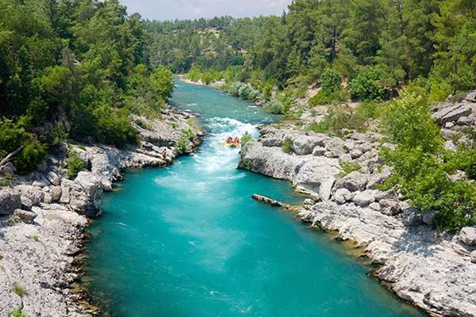
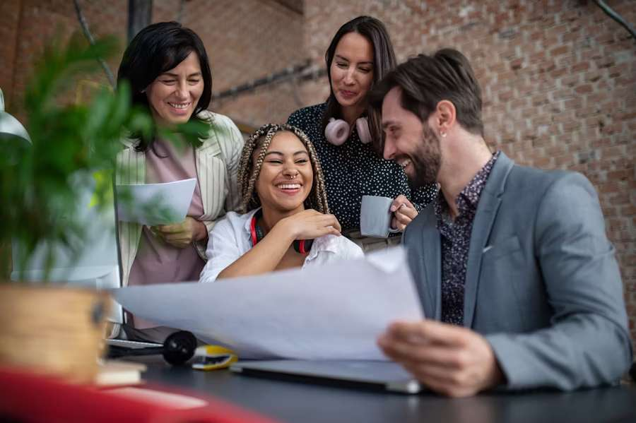

At White Water Adventures, our mission is to provide unforgettable rafting experiences that connect people with nature's raw power and beauty. We believe that conquering the rapids builds character, creates lasting memories, and fosters a deep appreciation for our pristine waterways. Our experienced guides are committed to safety, adventure, and environmental stewardship, ensuring every journey down the river is both thrilling and responsible.


White Water Adventures
History
Founded in 1985 by adventure enthusiasts Jake Morrison and Sarah Chen, White Water Adventures began as a small family operation with just two rafts and a dream to share the excitement of river running with others. What started in Jake's garage has grown into the premier rafting company in the region, serving thousands of adventurers each year.
Adventure Awaits You!